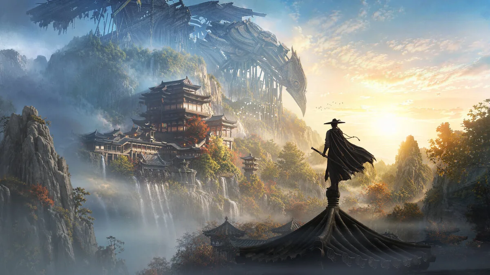

고찰
고찰
직접 플레이한 게임에서 레벨과 월드가 서사와 어긋나는 지점을 짚은 짧은 글입니다.
문제가 구조에 있는지, 그 위의 동기와 연출에 있는지 나눠 보고 바로잡을 방법을 제안했습니다.
연재 「세계의 상태와 서사」 — 세계가 이야기만큼 바뀌는가, 바뀐 것을 일관되게 지키는가

프래그마타 · 1편 · 2026.10.05
프래그마타 레벨 디자인 고찰
다시 찾아가는 이유는 긴박함과 맞물리는가
최종 보스전 직전에도 평소와 같은 셸터와 후반부 수집이 서사의 긴박함과 어긋나는 이유를 짚고, 구조는 두고 동기와 연출을 바꾸는 다섯 가지를 제안했습니다.

연운 · 2편 · 2026.10.22
연운 월드 디자인 고찰
세계의 상태는 어디까지 반영되어야 하는가
1장 이후 고향 마을에서 주요 NPC와 서브퀘스트가 주인공을 서로 다르게 대하는 모순의 원인을 짚고, 적은 비용으로 바로잡는 방법 세 가지를 제안했습니다.